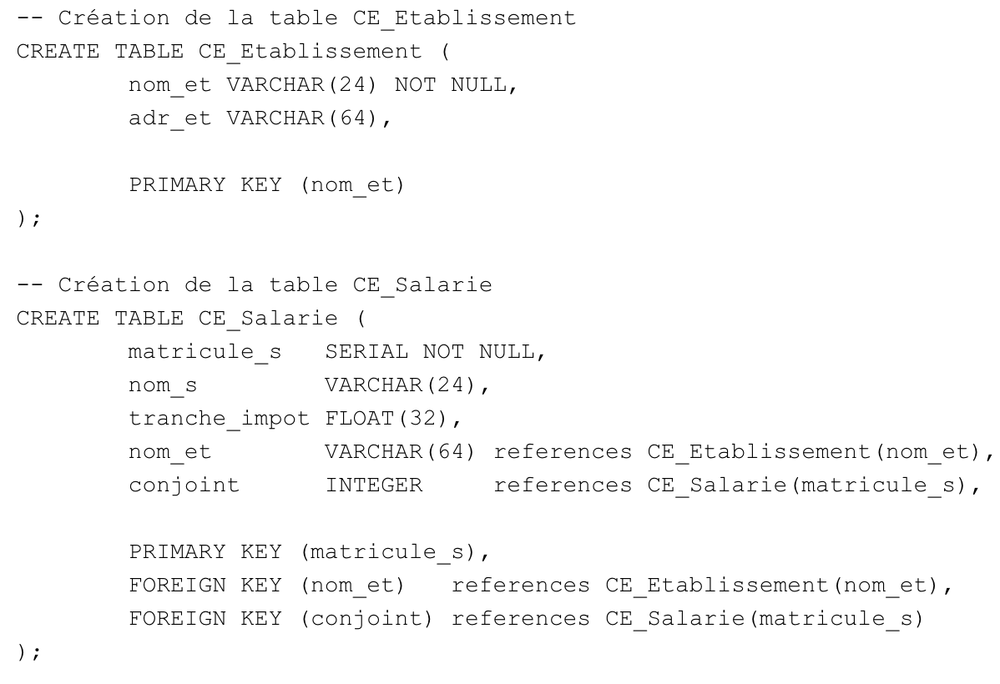

Dans notre projet, nous avons réalisé un travail minutieux qui consistait à créer un script SQL à partir d'un modèle conceptuel de données (MCD) fourni.
Ce script de création nous a permis de générer efficacement la structure de la base de données en utilisant les instructions SQL appropriées, telles que
la création de tables, les contraintes d'intégrité, les clés primaires et étrangères, etc.
Une fois la base de données mise en place, nous avons rédigé des requêtes SQL pour répondre aux différentes questions posées dans le cadre du projet.
Ces requêtes étaient formulées de manière à extraire, manipuler et analyser les données stockées dans la base de données, permettant ainsi d'obtenir des résultats pertinents et précis.
Notre approche rigoureuse et méthodique a permis d'obtenir des résultats fiables et de répondre efficacement aux exigences du projet.
